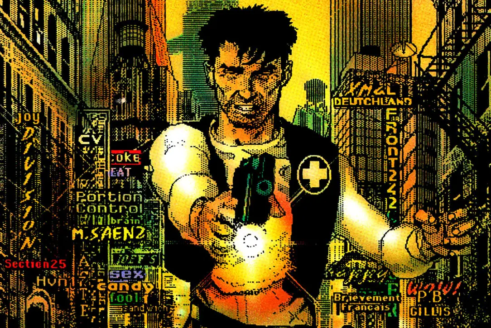

Dots by Any Other Name
Abstract: Days of Futures Past
1984 wasn't like 1984
In the early 1980s, artist Mike Saenz and writer Peter B. Gillis created the comic book Shatter> using the Apple Macintosh, only just introduced in 1984. This was the very first comic book drawn on a computer using the mouse, at the time a new kind of input device.

Figure 1: Shatter, the first comic book created on a computer in 1984
The production process established in Shatter was a harbinger of things to come and simultaneously showed which components of the process would prove to be a dead end. Unusual for the time, Peter B. Gillis wrote the scripts using a computer and sent them to artist Mike Saenz. Saenz painstakingly drew the comic panels on the Apple Macintosh and placed lettering and sound effects directly in the paint software. The finished pages were printed and then colored traditionally.
The Roots of the Art Form
In 2018 commercial comic books are drawn using a wide variety of techniques. Most commercial comics are still hand drawn using the traditional process of penciling and inking, but they are then scanned for digital coloring and the digital placement of lettering and sound effects.
In this paper, we delve into the history of Shatter, the subjects it covers, and the tools used to create its unique art style. We contrast how commercial comic books were created in 1985 with the way Shatter was created. Finally, we plot the path from the process used to create Shatter to the process used to create modern-day commercial comics.